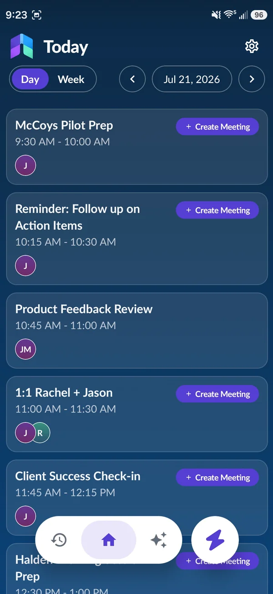
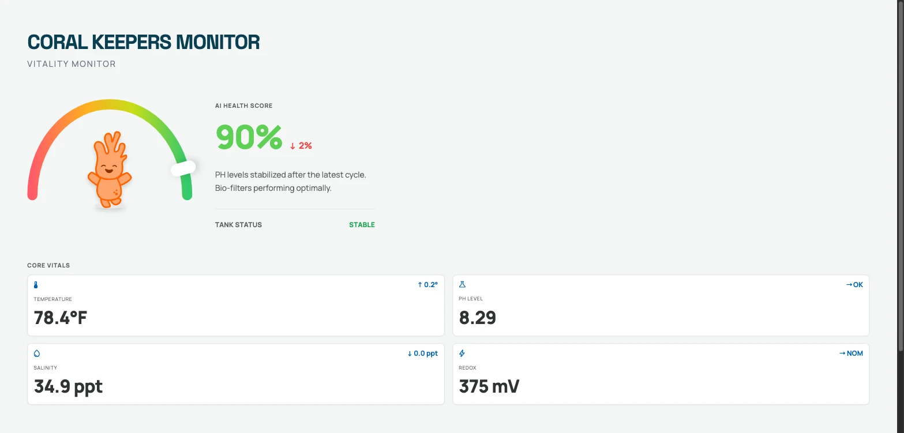
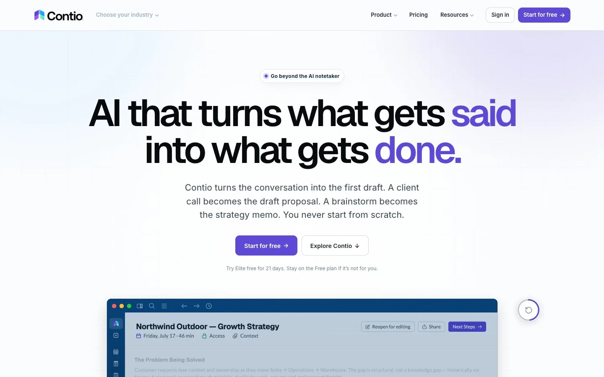

Contio
Brand, website and launch films for an AI meeting platform
Drag the edge to resize.Drag the slider to resize. Every size shows work made for it.
1280px · Laptop
I design and build products.
Currently designing at Contio.



Phone · MeetingOS mobile app Tablet · Coral Keepers tank monitor Laptop · the contio.ai website Billboard · the Benny launch film
Brand, website and launch films for an AI meeting platform
Classroom coral restoration, with an AI that knows the tank
Redesigning FINRA’s ecosystem for role-based experiences
Reimagining Savannah tours with interactive AR storytelling
Balancing independence and oversight in dementia care